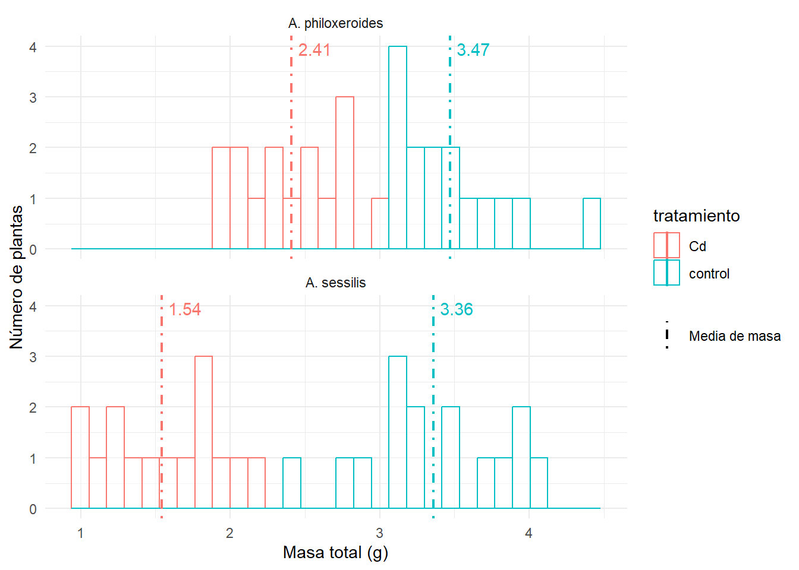
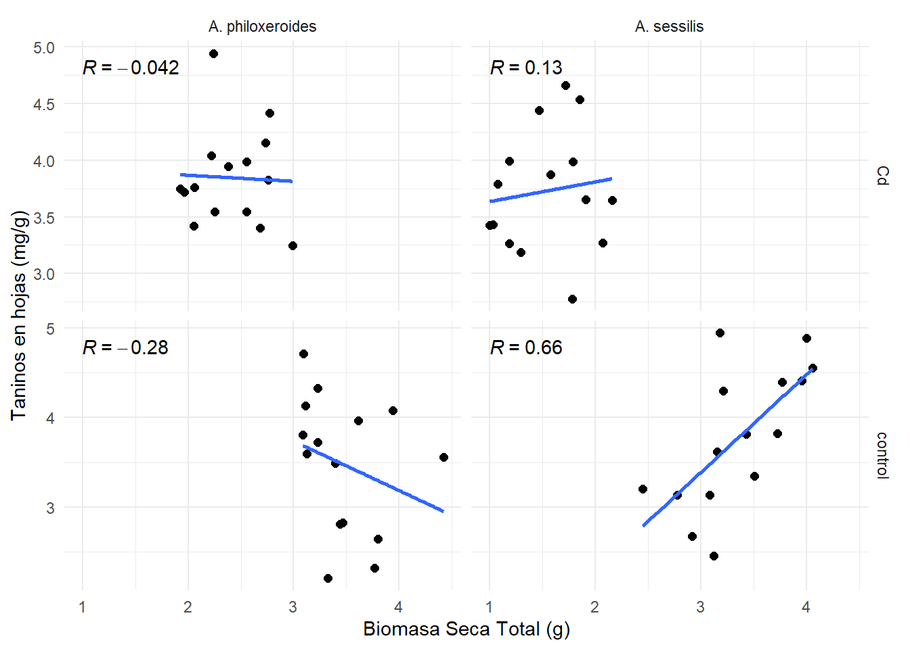
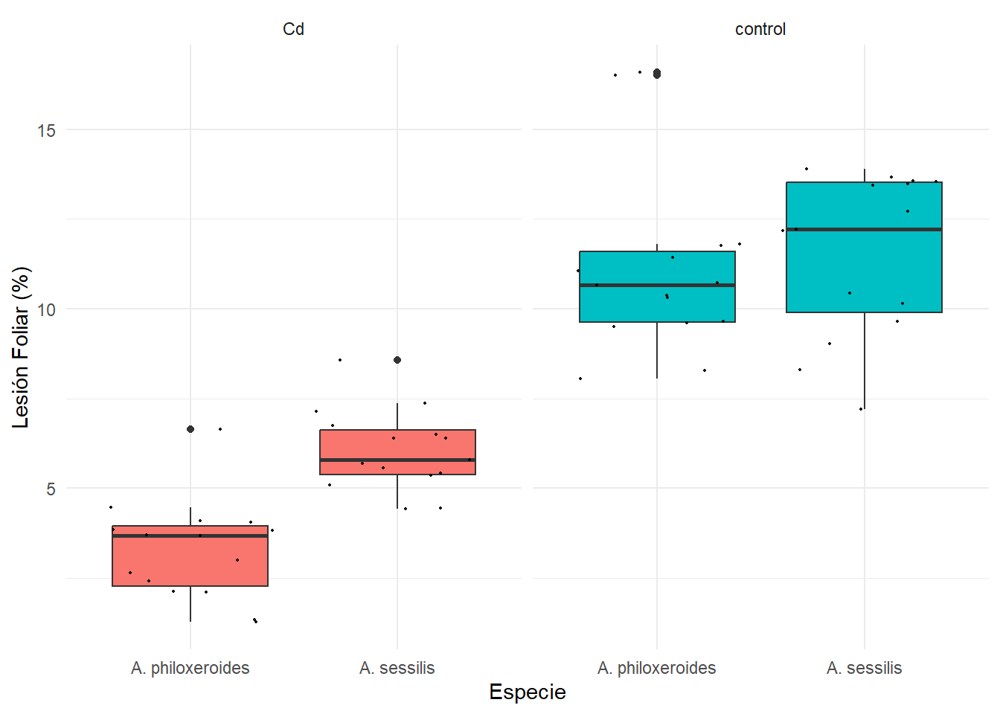

| tratamiento | Variable | Promedio | Desviación Estándar | |
|---|---|---|---|---|
| A. philoxeroides | Cd | Masa total (g) | 2.409 | 0.337 |
| Cd | Relación Raíz/Tallo | 1.003 | 0.140 | |
| Cd | Taninos (mg/g) | 3.847 | 0.435 | |
| Cd | Cd foliar (mg/g) | 28.812 | 5.123 | |
| Cd | Lesión foliar (%) | 3.280 | 1.382 | |
| control | Masa total (g) | 3.468 | 0.379 | |
| control | Relación Raíz/Tallo | 0.888 | 0.066 | |
| control | Taninos (mg/g) | 3.479 | 0.755 | |
| control | Cd foliar (mg/g) | 1.588 | 1.055 | |
| control | Lesión foliar (%) | 11.082 | 2.478 | |
| A. sessilis | Cd | Masa total (g) | 1.540 | 0.391 |
| Cd | Relación Raíz/Tallo | 1.059 | 0.162 | |
| Cd | Taninos (mg/g) | 3.729 | 0.535 | |
| Cd | Cd foliar (mg/g) | 17.047 | 5.485 | |
| Cd | Lesión foliar (%) | 6.059 | 1.120 | |
| control | Masa total (g) | 3.358 | 0.476 | |
| control | Relación Raíz/Tallo | 0.896 | 0.121 | |
| control | Taninos (mg/g) | 3.778 | 0.781 | |
| control | Cd foliar (mg/g) | 1.077 | 0.615 | |
| control | Lesión foliar (%) | 11.565 | 2.241 |
Efecto del Cadmio en plantas invasoras y nativas
Análisis Exploratorio
Introducción
La contaminación por metales es un grave problema ambiental provocado por la liberación de iones metales pesados al medio ambiente natural. Las actividades humanas como la minería, la agricultura y los procesos industriales han contribuido significativa mente al aumento de la contaminación por metales en el suelo, el agua y el aire (Dagdag et al. 2023; S 2016). Por tal motivo es de mucha irelevancia su estudio en cualquier área ambiental (Xie 2022). Para la ecología vegetal y la industria de la agricultura la contaminación de suelos por parte de los metales pesados es importante porque plantea graves peligros para el funcionamiento y crecimiento adecuado de las plantas (Athukorala Arachchige 2026). Un problema ecológico curioso, es que ante esta contaminación muchas especies de plantas invasoras han demostrado una mayor capacidad para tolerar y acumular metales pesados que sus plantas nativas coexistentes (Lin et al. 2025).
Para analizar este problema ecológico, este ejercicio de investigación compara una especie invasora con una nativa en términos de producción de biomasa y acumulación de metabolitos secundarios al ser expuestas a cadmio. Por lo tanto, se plantea la siguiente pregunta: ¿Difiere el impacto del Cadmio (Cd) sobre la producción de biomasa y la acumulación de metabolitos secundarios foliares al comparar la especie invasora (Alternanthera philoxeroides) con la especie nativa (Alternanthera sessilis)?.
Metodología
Se descargaron datos que corresponden a la investigación hecha por (Lin et al. 2025) A través de la plataforma online DRYAD. Los datos fueron limpiados y transformados a formato csv para su análisis bajo el lenguaje de programación (R Core Team 2026) usando el la interfaz de (Posit Team 2026). El resultado fue un data frame con 60 filas y 11 columnas. Para el procesamiento de datos se usó el paquete ‘tidyverse’ (Wickham et al. 2019), la representación de gráficas se ejecutaron a través de los paquetes ‘ggplot2’ y ‘ggpubr’ (Wickham 2016; Kassambara 2026) y las tablas se presentan usando el paquete ‘gt’ (Iannone et al. 2026).
Resultados
Dados los objetivos del estudio y la naturaleza de las variables, se seleccionaron el promedio y la desviación estándar como estadísticas descriptivas para evaluar la tendencia central y la variabilidad de las réplicas, cuyos resultados se presentan en la Tabla 1. Asimismo, con el fin de explorar los datos y obtener un panorama preliminar, se generó un histograma de la distribución de la biomasa por tratamiento (Figura 1), se evaluó la relación entre la biomasa y la concentración de taninos foliares (Figura 2), y se analizaron las diferencias en el daño foliar (Figura 3).
Entre los resultados de control los datos no muestran una clara diferencia, las cinco variables calculadas son muy similares entre la especie invasora A. philoxeroides y la especie nativa A. sessilis. En cambio, los datos que resultan de la exposición al cadmio sí muestran una notable diferencia entre las variables de Masa total (biomasa), la concentración de cadmio en las hojas y la lesión foliar. En estas tres variables, la especie invasora muestra una mejor respuesta a la contaminación que la especie nativa.

El análisis de la biomasa vegetal reveló una clara inhibición del crecimiento en respuesta a la exposición a cadmio (Cd) en ambas especies, en comparación con sus respectivos controles (Figura 1). En Alternanthera philoxeroides, la masa total promedio se redujo en un 30.55 % del tratamiento control al tratamiento en presencia de Cd. Por su parte, Alternanthera sessilis mostró una susceptibilidad notablemente mayor al metal pesado; su biomasa promedio disminuyó un 54.17 %en exposición al Cd. El histograma nos permite observar que la distribución de la biomasa en los individuos expuestos a Cd presenta un desplazamiento generalizado hacia valores menores, siendo este efecto mucho más acentuado y disperso en A. sessilis.

La relación entre la biomasa y la concentración de taninos foliares varió en respuesta al estrés por cadmio (Cd) (Figura 2). En el grupo control, A. sessilis mostró una fuerte correlación positiva (R = 0.66), indicando que la síntesis de taninos aumenta de forma proporcional al desarrollo de la planta, a diferencia de A. philoxeroides que mantuvo una tendencia ligeramente negativa (R = -0.28).
Bajo la exposición a Cd, las correlaciones lineales se disiparon drásticamente (A. philoxeroides R = -0.042; A. sessilis R = 0.13). Este fenómeno ocurre porque la presencia del metal indujo una acumulación alta y homogénea de taninos en las hojas (valores estables por encima de 3.5 mg/g), sin importar el grado de pequeñez o reducción de biomasa que sufrieran los individuos. Esta respuesta metabólica evidencia que las plantas priorizan la síntesis de taninos como un mecanismo de defensa y aclimatación frente al estrés oxidativo por Cd.

Los niveles de lesión foliar evaluados en ambas especies mostraron una respuesta inversa ante la presencia de cadmio (Cd) (Figura 3). Bajo condiciones óptimas (control), los individuos presentaron los mayores índices de daño en sus hojas, alcanzando valores promedio alrededor de 11 % para las dos especies. Sin embargo, al ser expuestas a la toxicidad por Cd, el porcentaje de lesión foliar cayó en ambas especies, registrando valores inferiores al 4% en A. philoxeroides y cercanos al 6% en A. sessilis. Esto sugiere que al mantener las hojas cargadas con estos compuestos defensivos por contrarrestar el estrés que provoca la acumulación del metal, la planta no solo mitiga el daño por el metal, sino que genera una protección colateral contra patógenos oportunistas que suelen atacar a los tejidos debilitados.
Conclusiones
La exposición a cadmio indujo cambios considerables en la biomasa, la concentración de taninos y el daño foliar en ambas especies en comparación con el tratamiento control. De forma general, los resultados apuntan a que la especie invasora, Alternanthera philoxeroides, tolera y aprovecha mejor los escenarios de estrés por metales pesados en comparación con su contraparte nativa, Alternanthera sessilis. Si bien ambas especies priorizan la asignación de recursos hacia la producción de taninos para contrarrestar la toxicidad del cadmio, es la especie invasora la que exhibe un desempeño adaptativo superior y un menor costo en términos de pérdida de biomasa.
NotaSobre los datos
El dataset que se puede descargar en el link de la pestaña ‘Otros enlaces’ corresponde a los datos en bruto de la investigación de (Lin et al. 2025).
Referencias
Athukorala Arachchige, Oshadhi Pavithra. 2026. «Effects of Humalite on Plant Growth, Symbiotic Nitrogen Fixation, and the Underlying Molecular Mechanism in Red Clover (Trifolium Pratense L.)». Tesis doctoral. https://doi.org/10.7939/84462.
Dagdag, Omar, Taiwo W. Quadri, Rajesh Haldhar, et al. 2023. An Overview of Heavy Metal Pollution and Control. American Chemical Society. https://doi.org/10.1021/bk-2023-1456.ch001.
Iannone, Richard, Joe Cheng, Barret Schloerke, et al. 2026. gt: Easily Create Presentation-Ready Display Tables. https://doi.org/10.32614/CRAN.package.gt.
Kassambara, Alboukadel. 2026. ggpubr: ’ggplot2’ Based Publication Ready Plots. https://doi.org/10.32614/CRAN.package.ggpubr.
Lin, Tiantian, Abdul Manan, Shuya Yang, et al. 2025. «Heavy Metal Pollution Enhances Pathogen Resistance of an Invasive Plant Species over Its Native Congener». Functional Ecology 39 (4): 1096-111. https://doi.org/10.1111/1365-2435.70011.
Posit Team. 2026. RStudio: Integrated Development Environment for R. Posit Software, PBC. http://www.posit.co/.
R Core Team. 2026. R: A Language and Environment for Statistical Computing. https://www.R-project.org/.
S, Kucuk. 2016. «Heavy Metal Pollution: Copper». International Journal of Zoology and Animal Biology 1 (5). https://doi.org/10.23880/izab-16000127.
Wickham, Hadley. 2016. ggplot2: Elegant Graphics for Data Analysis. https://ggplot2.tidyverse.org.
Wickham, Hadley, Mara Averick, Jennifer Bryan, et al. 2019. Welcome to the tidyverse. 4: 1686. https://doi.org/10.21105/joss.01686.
Xie, Qinyuan. 2022. «Heavy Metals Pollution and Potential Ecological Health Risk Assessment in the Yangtze River Reaches». SSRN Electronic Journal, advance online publication. https://doi.org/10.2139/ssrn.4302985.